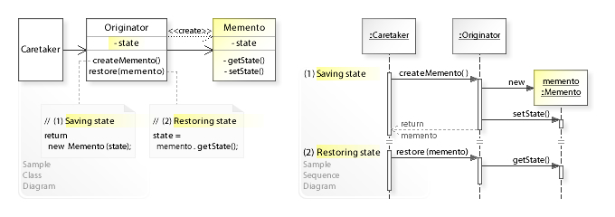
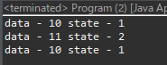

[Design pattern] 3-5. メメントパターン(Memento pattern)
こんにちは。明月です。
この投稿はデザインパターンのメメントパターン(Memento pattern)に関する説明です。
メメントパターンはクラスの現在の状況を別にクラスに格納するパターンです。
クラスのデータを格納する型ではメメントパターンではなく、クラスのコピー(インスタンスのコピー)で現在状況を格納することができます。でも、そのようにすると現在のインスタンスオブジェクトではなく、新しいインスタンスオブジェクトを生成することで、もしオブジェクト中でリソース(IOやSocket)を使っている場合は新しいコネクションを生成しなければならない問題もあります。
つまり、メメントパターンはインスタンスのオブジェクトは変わらず、中の値だけ更新して、状態を復旧する役割をするパターンがメメントパターンです。

#pragma once
#define _CRT_SECURE_NO_DEPRECATE
#include <stdio.h>
#include <iostream>
using namespace std;
// メメントパターンクラス
class Memento {
private:
// Nodeクラスで使うメンバー変数
int data;
int state;
public:
// コンストラクタ
Memento(int data, int state) {
this->data = data;
this->state = state;
}
// data値を取得
int getData() {
return this->data;
}
// state値を取得
int getState() {
return this->state;
}
};
// Nodeクラス
class Node {
private:
// メンバー変数
int data;
int state;
public:
// dataメンバー変数を設定する関数
void setData(int data) {
this->data = data;
}
// stateメンバー変数を設定する関数
void setState(int state) {
this->state = state;
}
// メメントパターンクラスでメンバー変数を更新
void setMemento(Memento* memento) {
this->data = memento->getData();
this->state = memento->getState();
}
// 現在の状態をメメントインスタンスでリターン
Memento* getMemento() {
return new Memento(this->data, this->state);
}
// 出力関数
void print() {
// コンソールに出力
cout << "data - " << this->data << " state - " << this->state << endl;
}
};
// mementoデータをファイルに書き出し関数
void writeMemento(Memento* memento) {
// ファイルリソースポインタ取得、パラメータのwは書き出す。(リソース取得)
FILE* fp = fopen("d:\\work\\memento.dat", "w");
// ポインタがnullならプログラムを終了する。
if (fp == NULL) {
cout << "File open failed" << endl;
return;
}
// データをファイルに書き出す。
fwrite(memento, 1, sizeof(Memento), fp);
// ファイルを閉める。(リソース返却)
fclose(fp);
}
// mementoデータをファイルから読み込む関数
Memento* readMemento() {
// インスタンス生成
Memento* memento = (Memento*)malloc(sizeof(Memento));
// ファイルリソースポインタ取得、パラメータのrは読み込む。(リソース取得)
FILE* fp = fopen("d:\\work\\memento.dat", "r");
// ポインタがnullならプログラムを終了する。
if (fp == NULL) {
cout << "File open failed" << endl;
return nullptr;
}
// データを読み込む。
fread(memento, 1, sizeof(Memento), fp);
// ファイルを閉める。(リソース返却)
fclose(fp);
// リターン
return memento;
}
// 実行関数
int main()
{
// Nodeインスタンス生成
Node node;
// データ設定
node.setData(10);
node.setState(1);
// コンソールに出力
node.print();
// メメントインスタンス取得
Memento* memento = node.getMemento();
// ファイルに書き出し。
writeMemento(memento);
// メモリ解除
delete memento;
// データ再設定
node.setData(11);
node.setState(2);
// コンソールに出力
node.print();
// ファイルからメメントデータを取得
memento = readMemento();
// Nodeインスタンスにデータ再設定
node.setMemento(memento);
// コンソールに出力
node.print();
// メモリ解除
delete memento;
return 0;
}
上の例でNodeクラスの状態を格納するMementoインスタンスを取得しました。
このMementoクラスで該当なクラスをファイルに書き出しするし、また、ファイルから読み込んでNodeインスタンスに更新するとデータが以前データに復旧することを確認できます。
例えば、ゲームの中でファイルにセーブしてまたファイルから読み込んで現在の状態を復旧することと同じ流れのパターンです。
import java.io.*;
// Nodeクラス
class Node implements Serializable {
// 直列化ID
private static final long serialVersionUID = 1L;
// Mementoクラス
class Memento implements Serializable {
// 直列化ID
private static final long serialVersionUID = 1L;
// Nodeクラスから格納するデータ変数
private int data;
private int state;
}
// メンバー変数
private int data;
private int state;
// dataのset関数
public void setData(int data) {
this.data = data;
}
// stateのset関数
public void setState(int state) {
this.state = state;
}
// メメントのインスタンス取得関数
public Serializable getMenent() {
// インスタンス生成
Memento memento = new Memento();
// 格納するデータ設定
memento.data = data;
memento.state = state;
// リターン
return memento;
}
// メメントのインスタンスで状態を復旧
public void setMement(Serializable memento) {
// クラスがMementoクラスタイプではなければ、処理中断
if (memento.getClass() != Memento.class) {
// コンソールに出力
System.out.println("The class type does not match.");
return;
}
// データタイプのキャスト
Memento memento1 = (Memento) memento;
// Nodeクラスにデータを更新
this.data = memento1.data;
this.state = memento1.state;
}
// 出力関数
public void print() {
// コンソールに出力
System.out.println("data - " + this.data + " state - " + this.state);
}
}
public class Program {
// メメントのインスタンスをファイルに格納する関数
private static void writeFile(Serializable serialize) {
// ファイル設定
File file = new File("d:/work/memento.dat");
// ファイルが存在すれば削除
if (file.exists()) {
// 削除
file.delete();
}
// 直列化
try (ByteArrayOutputStream baos = new ByteArrayOutputStream()) {
try (ObjectOutputStream oos = new ObjectOutputStream(baos)) {
oos.writeObject(serialize);
// メメントのインスタンスをbyte配列で変換
byte[] data = baos.toByteArray();
// ファイルのストリームを利用して変換したdataをファイルに書き出しする。
try (FileOutputStream stream = new FileOutputStream(file)) {
// 書き出し
stream.write(data, 0, data.length);
}
}
} catch (Throwable e) {
// 例外処理
throw new RuntimeException(e);
}
}
// メメントのインスタンスをファイルから読み込む関数
private static Serializable readFile() {
// ファイル設定
File file = new File("d:/work/memento.dat");
// ファイルが存在しなければ
if (!file.exists()) {
// 例外処理
throw new RuntimeException(new FileNotFoundException());
}
// 逆直列化
try (FileInputStream stream = new FileInputStream(file)) {
byte[] data = new byte[(int) file.length()];
// ファイルからバイナリを読み込む。
stream.read(data, 0, data.length);
try (ByteArrayInputStream bais = new ByteArrayInputStream(data)) {
try (ObjectInputStream ois = new ObjectInputStream(bais)) {
// byte配列のデータをメメントインスタンスに変換
return (Serializable) ois.readObject();
}
}
} catch (Throwable e) {
// 例外処理
throw new RuntimeException(e);
}
}
// 実行関数
public static void main(String[] args) {
// Nodeインスタンス生成
Node node = new Node();
// メンバー変数を設定
node.setData(10);
node.setState(1);
// コンソールに出力
node.print();
// メメントのインスタンスを取得
var memento = node.getMenent();
// ファイルに格納
writeFile(memento);
// メンバー変数を再設定
node.setData(11);
node.setState(2);
// コンソールに出力
node.print();
// ファイルからメメントのインスタンスを生成
memento = readFile();
// インスタンスの値を再設定
node.setMement(memento);
// コンソールに出力
node.print();
}
}

C/C++で作成したソースの構造と似ています。ただ、MemenoクラスをNodeクラスのインラインで作成しました。
つまり、Mementoクラスの仕様は状態を格納する役割があるので、Nodeクラスの以外ではデータ設定ができないようにすることが基本ルールです。
メメントのインスタンスの値を外部で設定することが可能にすると、それはメメントのパターンではなく、単純なパラメータをやり取りのクラスの役割になることです。
using System;
using System.Reflection;
using System.IO;
using System.Runtime.Serialization.Formatters.Binary;
// Nodeクラス
class Node
{
// Reflectionためのタイプ設定
private Type reflectionMemento = typeof(Memento);
// メンバー変数
public int Data { get; set; }
public int State { get; set; }
// メメントパターンクラス (ファイルに直列化するためのアトリビュート設定)
[Serializable]
class Memento
{
// メンバー変数
private int data;
private int state;
}
// 出力関数
public void Print()
{
// コンソールに出力
Console.WriteLine("Data - " + Data + " State - " + State);
}
// メメントのインスタンスを取得する関数
public object GetMemento()
{
// インスタンス生成
Memento memento = new Memento();
// メンバー変数がprivateで設定されているので、アクセスするためにはReflection機能を利用する。 変数設定
reflectionMemento.GetField("data", BindingFlags.Instance | BindingFlags.NonPublic).SetValue(memento, this.Data);
reflectionMemento.GetField("state", BindingFlags.Instance | BindingFlags.NonPublic).SetValue(memento, this.State);
// インスタンスリターン
return memento;
}
// メメントのインスタンスでメンバー変数を設定する関数
public void SetMemento(Object obj)
{
// パラメータがMementoクラスではなければ、例外処理
if (obj.GetType() != reflectionMemento)
{
// 例外処理
throw new Exception("The class type does not match.");
}
// メンバー変数がprivateで設定されているので、アクセスするためにはReflection機能を利用する。 変数の値を取得
this.Data = (int)reflectionMemento.GetField("data", BindingFlags.Instance | BindingFlags.NonPublic).GetValue(obj);
this.State = (int)reflectionMemento.GetField("state", BindingFlags.Instance | BindingFlags.NonPublic).GetValue(obj);
}
}
class Program
{
// メメントのインスタンスをファイルに書き出す関数
static void writeMemento(object memento)
{
// 直列化クラス
var formatter = new BinaryFormatter();
// 直列化するデータをファイルに書き出す。
using (FileStream stream = new FileStream("d:\\work\\memento.dat", FileMode.Create, FileAccess.Write))
{
// 直列化
formatter.Serialize(stream, memento);
}
}
// メメントのインスタンスをファイルから読み込む関数
static object readMemento()
{
// 直列化クラス
var formatter = new BinaryFormatter();
// ファイルから直列化データを読み込む。
using (FileStream stream = new FileStream("d:\\work\\memento.dat", FileMode.Open, FileAccess.Read))
{
// 逆直列化
return formatter.Deserialize(stream);
}
}
// 実行関数
static void Main(string[] args)
{
// インスタンス生成
Node node = new Node();
// メンバー変数設定
node.Data = 10;
node.State = 1;
// 出力関数
node.Print();
// メメントのインスタンスを取得
object memento = node.GetMemento();
// メメントのインスタンスをファイルに書き出す。
writeMemento(memento);
// Nodeインスタンスのメンバー変数を更新
node.Data = 11;
node.State = 2;
// 出力関数
node.Print();
// メメントのインスタンスをファイルから読み込む。
memento = readMemento();
// Nodeインスタンスにメメントのインスタンスでデータ再設定
node.SetMemento(memento);
// 出力関数
node.Print();
// 任意のキーを押してください
Console.WriteLine("Press any key...");
Console.ReadKey();
}
}
C#もJavaと似ている構造なソースです。MementoクラスがNodeクラスにインラインで設定して、Nodeクラスの外部では設定できないように作成しました。
でも、C#はインラインクラスでも、publicではなければアクセスができないので、Reflectionの機能を利用して直接にprivate変数を設定できるように作成しました。
ここまでデザインパターンのメメントパターン(Memento pattern)に関する説明でした。
ご不明なところや間違いところがあればコメントしてください。
- [Design pattern] 3-6. ステートパターン(State pattern)2021/11/17 20:04:47
- [Design pattern] 3-5. メメントパターン(Memento pattern)2021/11/16 20:01:36
- [Design pattern] 3-4. イテレータパターン(Iterator pattern)2021/11/15 19:31:28
- [Design pattern] 3-3. コマンドパターン(Command pattern)2021/11/05 17:01:42
- [Design pattern] 3-2. 責任の連鎖パターン(Chain of responsibility pattern)2021/11/04 19:27:58
- [Design pattern] 3-1. ストラテジーパターン(Strategy pattern)2021/11/03 18:38:52
- [Design pattern] 2-7. ファサードパターン(Facade pattern)2021/11/02 19:32:31
- [Design pattern] 2-6. プロキシパターン(Proxy pattern)2021/11/01 19:42:44
- [Design pattern] 2-5. フライウェイトパターン(Flyweight pattern)2021/10/29 19:48:27
- [Java] 60. Spring bootでApacheの連結とロードバランシングを設定する方法2022/02/28 18:45:48
- [Java] 59. Spring bootのJPAでEntityManagerを使い方2022/02/25 18:27:48
- [Java] 58. EclipseでSpring bootのJPAを設定する方法2022/02/23 18:11:10
- [Java] 57. EclipseでSpring bootを設定する方法2022/02/22 19:04:49
- [Python] Redisデータベースに接続して使い方2022/02/21 18:23:49
- [Java] Redisデータベースを接続して使い方(Jedisライブラリ)2022/02/16 18:13:17
- [C#] Redisのデータベースを接続して使い方2022/02/15 18:46:09
- [CentOS] Redisデータベースをインストールする方法とコマンドを使い方2022/02/14 18:33:07
- [Design pattern] 3-6. ステートパターン(State pattern)2021/11/17 20:04:47
- [Design pattern] 3-5. メメントパターン(Memento pattern)2021/11/16 20:01:36
- [Design pattern] 3-4. イテレータパターン(Iterator pattern)2021/11/15 19:31:28
- [CentOS] Linux環境(CentOS)でCassandra(NoSQL DB)をインストールする方法(DBeaverブラウザでNoSQL使い方)2021/11/12 17:33:58
- [Design pattern] 3-3. コマンドパターン(Command pattern)2021/11/05 17:01:42
- [Window] apache-tomcatでロードバランシング(Load balancing)する方法とセッションクラスタリング（セッション共有）2021/11/05 16:58:45
- [Window] Apacheでmod_jkとmod_proxyの差異、apacheでtomcatのwebsocketのプロキシフォーワードする方法2021/11/05 16:55:05